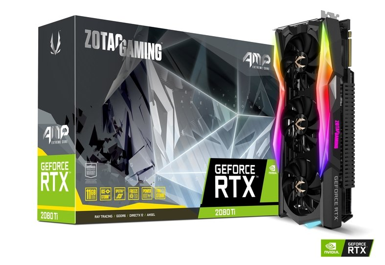
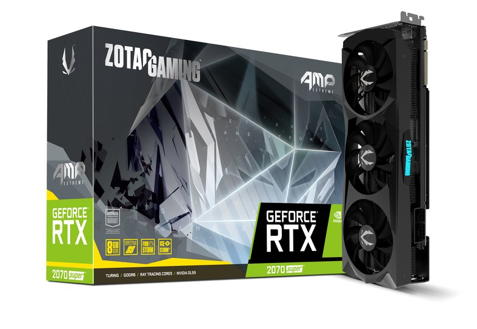
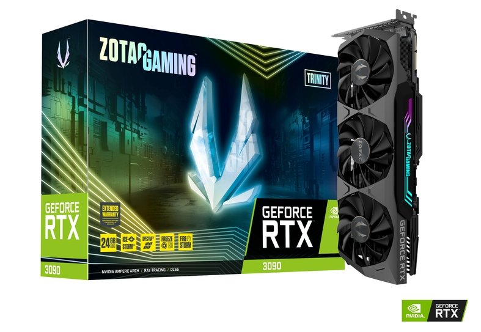

Productos
Series 2000
Tras un teaser que nos confirmaba lo que se estaba rumoreando meses atrás, Nvidia presentaba de manera oficial su generación de tarjetas gráficas: Nvidia GeForce RTX 2000. Se confirma pues el nombre que ya se había filtrado y que serán los componentes que estrenan la nueva arquitectura Turing, la cual ya nos mostraron en un evento anterior. La familia de gráficas se ha presentado en un ambiente y momento muy propicio: la Gamescom 2018. Uno de los principales eventos del año para el gaming, terreno en el que el fabricante pretende que brille esta nueva generación. Sus puntos fuertes: esta nueva arquitectura, memoria GDDR 6 y la nueva técnica de renderizado ray tracing.
Así, las nuevas tarjetas gráficas de consumo son las Nvidia GeForce RTX 2070, RTX 2080 y RTX 2080 Ti. La compañía promete un desempeño "hasta seis veces superior a la generación previa de gráficas".
Las nuevas gráficas parten de los 8 GB de memoria GDDR 6, integrando una refrigeranción compuesta de ventiladores duales y una nueva cámara de vapor de doble capacidad. Y además de toda la potencia gráfica y esas iluminaciones tan realistas que han demostrado, Nvidia habla de lo silenciosas que son sus nuevas tarjetas, concretamente de que hacen una quinta parte del ruido que emite la 1080 Ti (incluso con overclocking al máximo).
| Imagen | Precio |
|---|---|
|  | AMP RTX 2080Ti 11GB Comprar: |
|  | AMP RTX 2070 8GB Comprar: |

|
AMP RTX 2060 6GB Comprar: |
Series 3000
Hace dos años, sin pandemias y en un GamesCom presencial, NVIDIA presentaba a bombo y platillo su arquitectura Turing y sus gráficas de la familia RTX 2000. Comenzaba la era del raytracing y de un gaming más ambicioso (y caro) que nunca, y durante todo este tiempo esa familia ha demostrado -con su evolución con los modelos SUPER- que esta firma sigue (de momento) marcando el ritmo en este segmento. En NVIDIA no se han dormido en los laureles, y hoy presentan por fin la esperada evolución de la arquitectura Turing. Se llama Ampere, y llega con mejoras notables en todos los apartados. Para demostrarlo tenemos con nosotros las nuevas NVIDIA GeForce RTX 3070, RTX 3080 y RTX 3090, unas gráficas absolutamente bestiales que más o menos doblan los rendimientos de sus antecesoras con precios más bajos que los de sus predecesoras.
| Imagen | Precio |
|---|---|
|  | AMP RTX 3090 24GB Comprar: |

|
AMP RTX 3080 10GB Comprar: |

|
AMP RTX 3070 8GB Comprar: |